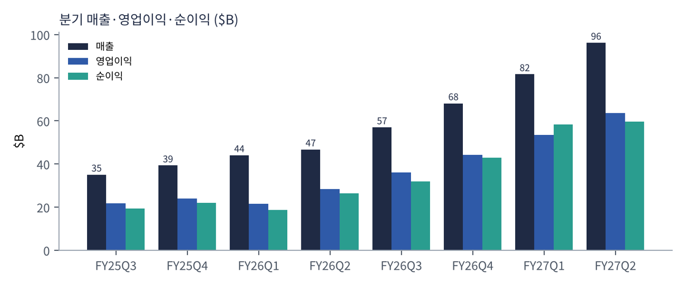
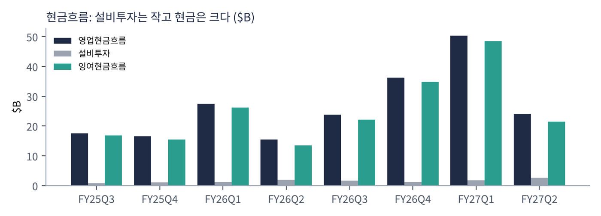
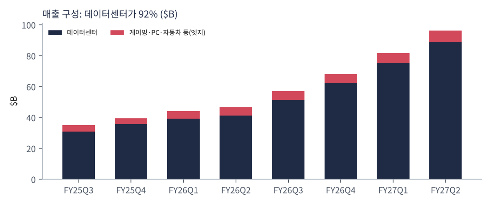
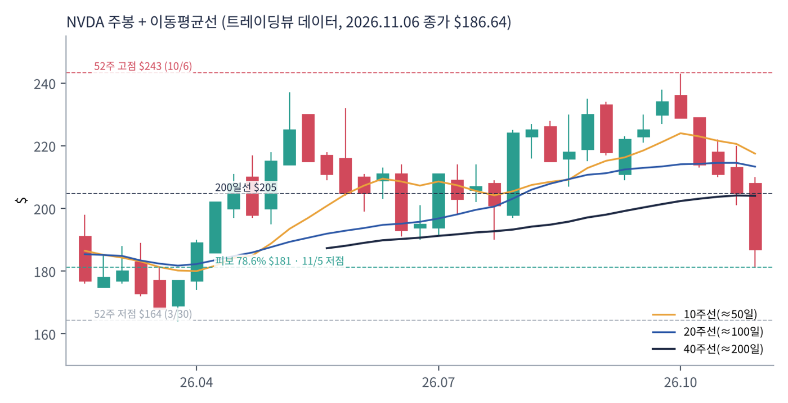
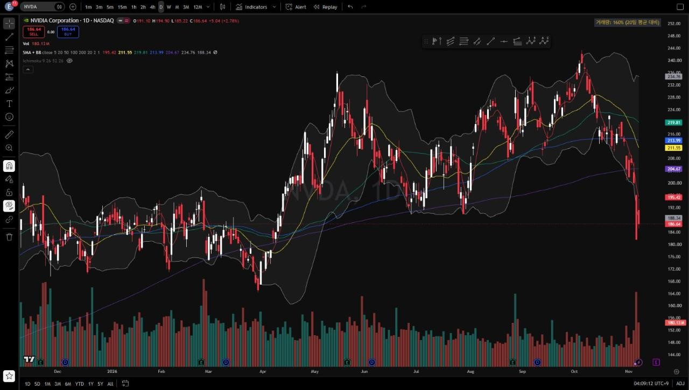
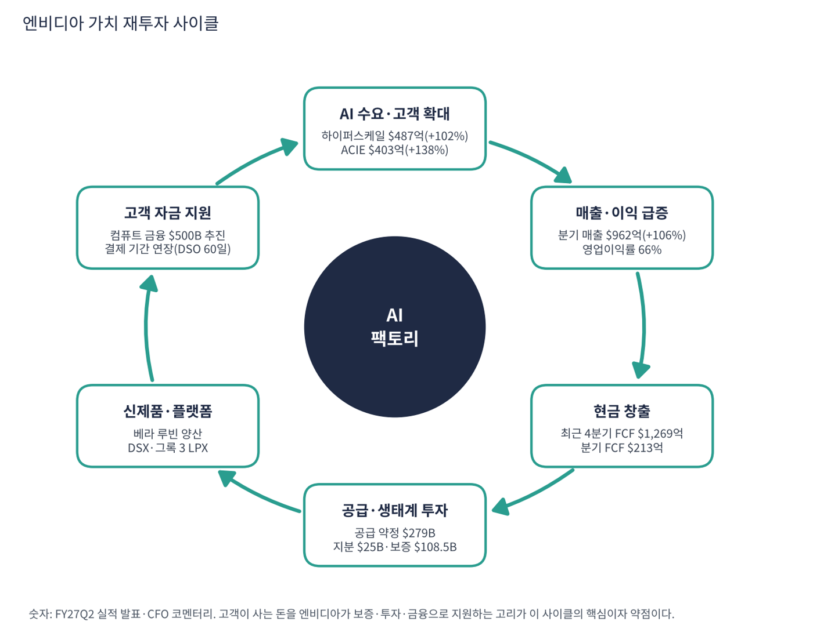

엔비디아는 원래 게임용 그래픽카드(GPU) 회사였다. 지금은 AI 학습·추론용 가속기와 이를 묶는 네트워크, 소프트웨어(CUDA)를 파는 AI 인프라 회사다. 매출의 92%가 데이터센터에서 나온다. 8개 분기 만에 분기 매출이 $351억에서 $962억으로 2.7배, 순이익이 $193억에서 $597억으로 3배가 됐다.
| 항목 | 내용 |
|---|---|
| 종목 | NVIDIA Corporation (NVDA) · NASDAQ · 반도체 · 1993년 설립 · 본사 캘리포니아주 산타클라라 |
| 시가총액 | 약 $4조 4,980억 · TTM PER 23.6배 · 희석 주식 약 242.9억 주 (트레이딩뷰, 11/6 종가 $186.64) |
| 최근 분기(FY27Q2) | 매출 $962억(+106%), 영업이익 $637억(66%), 순이익 $597억, EPS $2.46(+128%) |
| 다음 분기 가이던스 | FY27Q3 매출 $1,080억 ± 2%, 매출총이익률 74.0%(중국 데이터센터 컴퓨트 매출 0 가정) |
| 주주환원 | FY27Q2 약 $260억(자사주 $197억 + 배당 $60억), 분기 배당 $0.25, 잔여 매입 한도 $990억 |
| 다음 실적 | FY27Q3 실적: 2026년 11월 하순 발표 예정 (회계연도는 1월 말 종료) |
| 직책 | 인물 | 역할·특징 |
|---|---|---|
| 창업자 겸 CEO | 젠슨 황 | 1993년 창업. "컴퓨트가 곧 매출"이라는 논리로 AI 팩토리 전체(칩·네트워크·소프트웨어·부지·전력·자금)를 직접 챙기는 전략을 제시 |
| CFO | 콜레트 크레스 | 분기 CFO 코멘터리로 사업부·약정·보증·현금흐름을 공개. 결제 기간 연장·약정 증가의 이유를 설명하는 창구 |
경영 스타일: '수요가 보이기 전에 공급을 잠그고, 고객이 못 사면 돈까지 대 준다'. 황 CEO는 "1년 전에는 연구소 하나가 구축을 이끌었지만 지금은 여러 프런티어 연구소가 동시에 확장한다"고 말했다. 행동은 더 공격적이다. 공급 약정을 한 분기에 $119B에서 $279B로 늘렸고(회사 설명: 주로 메모리 조달), 회사채 $250억을 발행했으며, 고객 데이터센터 보증 최대 노출액이 $108.5B에 이른다. 번 돈으로 주주환원($260억)을 하면서 생태계에도 쏟아붓는 구조다.
블랙웰 울트라(GB300 NVL72)에서 베라 루빈으로 넘어가는 중이다. AI 에이전트용 첫 CPU 베라, 추론 전용 그록 3 LPX, 스펙트럼-6 네트워크 스위치, 블루필드-4 스토리지, CUDA-X와 오픈 모델(네모트론·코스모스·GR00T)을 묶어 판다.
GPU 한 종류가 아니라 AI를 만드는 공장 전체(DSX 설계도, 부지·전력, 자금)를 공급하는 회사가 목표다. 경쟁사가 칩 하나를 잘 만들어도 '공장 전체'와 겨루기 어렵게 만드는 것이 해자 전략이다.
| 분기 (종료월) | 매출 | YoY | 매출총이익률 | 영업이익 | 순이익 | EPS | 데이터센터 | FCF | 특이 사항 |
|---|---|---|---|---|---|---|---|---|---|
| FY25Q3 (24.10) | $35.1B | +94% | 74.6% | $21.9B | $19.3B | $0.78 | $30.8B | $16.8B | |
| FY25Q4 (25.1) | $39.3B | +78% | 73.0% | $24.0B | $22.1B | $0.89 | $35.6B | $15.5B | |
| FY26Q1 (25.4) | $44.1B | +69% | 60.5% | $21.6B | $18.8B | $0.76 | $39.1B | $26.1B | H20 재고·약정 손실 $4.5B |
| FY26Q2 (25.7) | $46.7B | +56% | 72.4% | $28.4B | $26.4B | $1.08 | $41.1B | $13.5B | |
| FY26Q3 (25.10) | $57.0B | +62% | 73.4% | $36.0B | $31.9B | $1.30 | $51.2B | $22.1B | |
| FY26Q4 (26.1) | $68.1B | +73% | 75.0% | $44.3B | $43.0B | $1.76 | $62.3B | $34.9B | |
| FY27Q1 (26.4) | $81.6B | +85% | 74.9% | $53.5B | $58.3B | $2.39 | $75.2B | $48.6B | 지분 평가이익 $15.9B |
| FY27Q2 (26.7) | $96.2B | +106% | 75.0% | $63.7B | $59.7B | $2.46 | $89.0B | $21.3B | 매출채권 +$22.3B, DSO 60일 |


흐름 요약: 매출 성장률은 FY26Q2 +56%까지 내려갔다가 블랙웰 출하와 함께 +62% → +73% → +85% → +106%로 4분기 연속 가속했다. 규모가 커질수록 성장률이 떨어지는 일반 패턴의 반대다. FY26Q1 매출총이익률 60.5%는 대중국 수출 통제로 H20 재고·구매약정 손실 $45억을 반영한 일회성이었고, 이후 75% 안팎으로 회복했다. 순이익에는 투자 이익이 섞여 있다(FY27Q1 평가이익 $159억, FY27Q2 $78억). 본업은 영업이익으로 봐야 한다. FY27Q2 FCF가 $486억에서 $213억으로 반 토막 난 것은 매출채권이 $223억 늘고(DSO 45일 → 60일) 재고가 $258억 → $316억으로 늘었기 때문이다(베라 루빈 준비).
| 매출원 | 돈을 버는 방식 | FY27Q2 매출 | 비중 | 성장 |
|---|---|---|---|---|
| 하이퍼스케일 | 마이크로소프트·구글·아마존·메타·오라클 등 대형 클라우드가 사는 GPU 랙(GB300 NVL72), 네트워크 스위치·NIC | $487억 | 51% | +102% |
| ACIE (AI 클라우드·산업·기업) | AI 전용 클라우드(코어위브·네비우스 등), AI 모델 회사, 각국 정부(소버린 AI), 일반 기업 | $403억 | 42% | +138% |
| 엣지 컴퓨팅 | 게이밍·워크스테이션 GPU, RTX PC, 자동차(DRIVE), 로봇(Jetson Thor) | $72억 | 7.5% | +27% |

성장의 주인공이 하이퍼스케일러에서 ACIE로 옮겨가고 있다. 1년 전 ACIE($169억)는 하이퍼스케일($242억)의 70%였는데 지금은 83%다. 빅테크 몇 곳에 매출이 몰렸다는 비판에 대한 회사의 답이다. 다만 ACIE에는 대차대조표가 약한 신생 AI 클라우드·모델 회사가 많아 엔비디아가 지분 투자·보증·결제 기간 연장으로 엮여 있다. 중국 데이터센터 매출은 사실상 0(2분기 호퍼 출하는 데이터센터의 1% 미만)이고 가이던스도 0으로 가정한다. 엣지는 메모리 가격 상승으로 소비자 PC 판매가 둔화했다.
엔비디아는 스스로를 "AI와 가속 컴퓨팅의 세계적 리더"라고 소개한다. 최근 발표에서 읽히는 목표는 더 구체적이다. AI를 만드는 공장(AI 팩토리)의 모든 층을 설계하고 공급하는 것이다.
| 층 | 엔비디아가 하는 일 (FY27Q2 발표 기준) |
|---|---|
| 연산·CPU | 블랙웰 울트라 → 베라 루빈(전면 양산), AI 에이전트용 CPU 베라 |
| 추론·네트워크·스토리지 | 그록 3 LPX(전면 양산, 이번 분기 $29억 지급), 스펙트럼-6 스위치, 블루필드-4 STX |
| 소프트웨어·모델 | CUDA-X, 네모트론·코스모스·GR00T 오픈 모델, 에이전트 툴킷 |
| 공장 설계·부지·전력 | DSX 플랫폼, SB에너지와 오하이오 PORTS-Pike 약 4.25GW(오픈AI 20년 임대) |
| 자금 | 아폴로·블랙록·블랙스톤·브룩필드·골드만삭스·KKR과 $500B 이상 제3자 자본을 모으는 컴퓨트 금융 플랫폼 추진 |


위: 트레이딩뷰 주봉 데이터로 재구성(10·20·40주선). 아래: 트레이딩뷰 공개 차트 일봉 캡처(작도 숨김, 이동평균선·볼린저밴드만 표시).
| 이동평균 | 값 | 종가 대비 | 해석 |
|---|---|---|---|
| 5일선 | $195.42 | -4.5% | 11/5 급락으로 가파르게 꺾임 |
| 20일선 | $211.55 | -11.8% | 10월 중순 이후 하락 전환, 50일선 아래로 |
| 50일선 | $219.81 | -15.1% | 9~10월 상승을 받치던 선, 이제 저항 |
| 100일선 | $213.99 | -12.8% | 20·50일선과 함께 $211~220이 두꺼운 저항대 |
| 200일선 | $204.67 | -8.8% | 11/5 종가로 이탈. 4월 이후 처음 |
배열은 50일 > 100일 > 20일 > 200일 > 주가다. 4월 저점($164) 이후 만든 상승 추세가 10월 고점($243)에서 꺾였고 11월 첫 주(-10%)에 200일선까지 무너졌다. 11/5 하루 -9.3%는 마이크론 -17.5% 등 반도체 전체 급락과 겹쳤다.
| 규칙 | 기준 | 현재 값 | 신호 |
|---|---|---|---|
| 장기 추세 필터 | 종가 vs 200일선 | $186.64 < $204.67 | 매도 |
| 중장기 교차 | 50일선 vs 200일선 | $219.81 > $204.67 | 매수 |
| 단기 교차 | 20일선 vs 50일선 | $211.55 < $219.81 | 매도 |
| 돈키언 채널 | 55일 고가 $243.37 / 저가 $181.46 | 중간값 $212.42 아래 | 매도 |
| 1개월 모멘텀 | 21거래일 수익률 | -19.0% (기준 $230.48) | 매도 |
| 3개월 모멘텀 | 63거래일 수익률 | -14.2% (기준 $217.55) | 매도 |
| 6개월 모멘텀 | 126거래일 수익률 | -13.3% (기준 $215.20) | 매도 |
| 12개월 모멘텀 | 252거래일 수익률 | -4.4% (기준 $195.21) | 매도 |
| 종합 (8개 평균) | -0.75 | 강한 매도 |
해석: 8개 중 7개가 매도다. 12개월 모멘텀까지 마이너스(1년 전 $195보다 낮음)라 장기 모델도 롱을 정당화할 근거가 사라졌다. 남은 매수 신호는 50/200일 교차 하나인데 50일선이 빠르게 내려와 몇 주 안에 데드크로스가 날 수 있다. 14일 ATR $8.02 (4.3%).
| 가격 | 무엇이 바뀌나 | 의미 |
|---|---|---|
| $195 ~ 196 | 12개월 모멘텀 기준가($195.2)·5일선 회복 | 첫 신호(12M) 매수 전환, 종합 -0.75 → -0.50 |
| $205 | 200일선 회복 | 장기 추세 필터 매수 전환, '추세 복귀'의 최소 조건 |
| $215 ~ 220 | 6개월·3개월 기준가, 50일선 | 종합 점수가 플러스로 돌아섬 |
| 50일선 < 200일선 | 데드크로스 | 마지막 매수 신호까지 사라짐 → -1.00 |
| 구분 | 가격대 | 근거 |
|---|---|---|
| 저항 2 | $211 ~ 220 | 20·50·100일선 밀집 |
| 저항 1 | $204 ~ 206 | 200일선, 11/4 종가 $200~207 구간 |
| 지지 1 | $181 ~ 182 | 11/5 저가 $181.5 + 4월 저점→10월 고점 피보나치 78.6% $181.2 |
| 지지 2 | $164 ~ 172 | 2026년 3월 박스 하단, 52주 저점 $164.3 |
펀더멘털은 최강이지만 추세는 하락이다. 추세 자금이 돌아오기 전까지 반등은 $205~220 저항대에서 막힐 가능성이 크다. 추세 매수가 아니라 지지 구간에서 작게 나눠 사고 손절을 짧게 두는 역추세 접근이 맞다. $181~186에서 계획 비중의 30%, $176 부근 20%를 진입하고(평균 $182·손절 $170 기준 손익비 1:1.9~1:3.2), 실적 후 $205 종가 회복 시 나머지 50%를 추세 매수로 추가한다. 1차 $205에서 40%, 2차 $220에서 40% 익절하고 나머지는 $243 재도전을 본다. $181 종가 이탈이면 신규 매수를 중단하고, $170 종가 이탈이면 손절한다.
| 악재 요인 | 내용 | 강도 |
|---|---|---|
| 벤더 파이낸싱 | 보증 최대 $108.5B, 지분 약정 $25B, 결제 기간 연장(DSO 60일). AI 클라우드 고객 한두 곳이 흔들리면 보증·지분·매출채권이 동시에 영향 | 높음 |
| 맞춤형 칩(ASIC) | 구글 TPU(마벨과 신규 프로그램), 아마존 트레이니엄, 오픈AI 자체 추론칩. 마벨은 맞춤형 칩 매출이 FY28에 2배 이상 늘 것으로 전망 | 중간~높음 |
| 메모리 원가 | HBM·DRAM 가격 급등이 원가를 올려 매출총이익률을 압박하고 소비자 PC 수요를 누름. FY27Q3 매출총이익률 74.0% 가이던스 | 중간 |
| 규제·중국 | 수출 통제, 중국 데이터센터 매출 0 가정. 미 중간선거 후 데이터센터 관련 규제 논의. 아시아 구매자 명단 축소 요구 보도 | 중간 |
| AMD 등 경쟁 | AMD MI 시리즈로 추론 시장 공략 | 중간 |
| 순이익 착시 | 지분 평가이익(분기 $8~16B)이 순이익을 키움. 주식시장 하락 시 반대로 작용 | 참고 |
| 티커 | 회사 | 시가총액 | PER(TTM) | PEG | P/S | EPS 성장(YoY) |
|---|---|---|---|---|---|---|
| NVDA | 엔비디아 | $4,498B | 23.6배 | 0.20 | 15.63배 | +125% |
| AVGO | 브로드컴 | $1,402B | 37.5배 | 0.34 | 14.81배 | +100% |
| AMD | AMD | $736B | 97.6배 | 0.68 | 14.50배 | +127% |
| TSM | TSMC | $1,630B | 24.2배 | 0.39 | 12.03배 | +59% |
| MRVL | 마벨 | $124B | 46.5배 | – | 12.57배 | – |
| QCOM | 퀄컴 | $177B | 13.0배 | 0.08 | 3.97배 | +160% |
EPS 성장률은 트레이딩뷰 TTM 값이다. 마벨은 직전 연도 기저로 산출되지 않는다.
비교 결론: 엔비디아 PER 23.6배는 AMD(97.6배)·마벨(46.5배)·브로드컴(37.5배)보다 낮고 TSMC(24.2배)와 비슷하다. EPS가 +125% 늘어 PEG 0.20은 동종 중 퀄컴(0.08) 다음으로 낮다. AI 반도체 중 이익 대비 가격이 가장 부담 없는 축이지만, 그 이익이 고객 자금 지원에 얼마나 기대는지는 PER로 보이지 않는다.
엔비디아는 적자 기업이 아니다. 영업이익률 66%에 최근 4분기 FCF가 $1,269억이라 '런웨이'(남은 현금으로 몇 년 버티나)는 의미가 없다. 대신 약정·보증이 현금을 얼마나 압박할 수 있는지를 점검했다.
| 지표 | 값 | 계산·출처 | 해석 |
|---|---|---|---|
| 최근 4분기 FCF | +$1,269억 | FY26Q3~FY27Q2 합계. 트레이딩뷰 $1,270억과 일치 | 설비투자는 분기 $27억(매출의 3%)뿐인 '가벼운' 회사 |
| 분기 FCF 변동 | $486억 → $213억 | FY27Q1 → FY27Q2 | 매출채권·재고 증가 탓. 회사는 운전자본·법인세 납부를 이유로 설명 |
| 현금·채권성 증권 / 장기 부채 | $566억 / $324억 | FY27Q2 CFO 코멘터리 (분기 중 회사채 $250억 발행) | 순현금 약 $242억. 장기 부채는 $75억에서 4배 이상 |
| 보유 지분 | 상장 $428억 + 비상장 $512억 | FY27Q2 | 평가손익이 순이익을 흔드는 자산 |
| 총 약정 / 보증 최대 노출 | $366B / $108.5B | 공급 약정 $279B 포함 / SB에너지 $105B + AI 클라우드 $3.5B | 현금흐름 밖의 의무 |
| 가정 | 필요 금액 | 충당 재원 | 의미 |
|---|---|---|---|
| 보증 최대 노출액 전액 이행 (극단적 가정) | $1,085억 | 현금성 $566억 + 최근 4분기 FCF $1,269억 = $1,835억 | 1년 FCF만으로 약 1.2배 감당. 현실화 가능성은 낮다고 보지만 규모는 큼 |
| FCF 50% 감소 (가정) | – | 연 약 $635억 | 현금성 $566억과 합쳐도 보증 전액에는 못 미침 |
보증 전액 이행과 FCF 50% 감소는 내가 둔 스트레스 가정이다. 회사가 제시한 수치가 아니다.
| 기준 | 매출 | P/S | 비고 |
|---|---|---|---|
| 트레이딩뷰 표시값(11/6 환산) | – | 15.6배 | 산출 기준 차이로 아래보다 높음 |
| 최근 4분기(TTM, SEC) | $3,030억 | 14.8배 | 시총 $4.498조 ÷ $3,030억 |
| FY27Q3 가이던스 연율화 | $4,320억 | 10.4배 | $1,080억 × 4 (가정) |
| 동종 AI 반도체 | – | – | AMD 14.5, 브로드컴 14.8, 마벨 12.6, TSMC 12.0, 퀄컴 4.0 |
해석: 엔비디아 P/S 14.8배는 AI 반도체 동종과 비슷한 범위다. 영업이익률이 66%라 매출 1달러가 만드는 이익이 동종보다 크다. 가이던스대로 가면 1년 뒤 P/S는 10배대로 내려오지만, 매출 성장이 멈추면 이 숫자가 높다는 이야기가 바로 나온다.
| 지표 | 값 | 판정 |
|---|---|---|
| EBITDA (트레이딩뷰, TTM) | $2,013억 | 흑자 |
| 영업이익 (TTM) | $1,976억 | FY26Q3~FY27Q2 합계 |
| 영업이익 → EBITDA 차이 | 약 $37억 | 감가상각·상각비(추정). 설비투자가 작아 거의 같음 |
| EBITDA 마진 | 66% | $2,013억 ÷ $3,030억 |
| 순부채 / EBITDA | 순현금 | 현금·채권성 증권 $566억 > 장기 부채 $324억 |
EBITDA도 영업이익도 사상 최대 흑자다. 설비투자가 작아 감가상각 부담이 거의 없다는 점이 설비를 직접 짓는 반도체 제조사와 가장 다른 점이다.
| 방식 | PER | EPS 성장률 | PEG | 판정 |
|---|---|---|---|---|
| 트레이딩뷰 (TTM, 11/6 환산) | 23.6배 | +125.1% | 0.20 | 적극 매수 |
| 직접 계산 (SEC 분기 EPS 합계) | 23.6배 ($186.64 ÷ $7.91) | +125% ($3.51 → $7.91) | 0.19 | 적극 매수 |
| 영업이익 기준 (지분 평가이익 제외, 추정) | 약 27.6배 ($186.64 ÷ 약 $6.75) | 약 +106% (영업이익 TTM $960억 → $1,976억) | 약 0.26 | 적극 매수 |
| 보수적 (성장률 30%로 급감 가정) | 약 27.6배 | +30% | 0.92 | 투자 적격 |
판정: PEG 0.20 → '적극 매수' 기준(0.5 이하) 충족. 투자 이익이 섞인 순이익을 빼고 영업이익으로 다시 계산해도 PER 약 27.6배, PEG 약 0.26이라 결론이 같다(주당 영업이익 $6.75는 세율 17% 가정의 내 추정치). 성장률이 30%로 급감해도 PEG 0.92로 '투자 적격'을 지킨다. 선행으로 보면 FY27Q3 가이던스 연환산 순이익 약 $2,400억 가정 시 PER 약 19배다. 숫자로는 이번 보고서 종목 중 가장 싼 축이지만, PEG는 성장이 지속된다는 전제일 뿐 약정·보증·결제 연장 같은 질적 위험은 반영하지 못한다.

엔비디아 사이클의 엔진은 AI 수요가 만든 GPU 매출과 현금이다. 그 현금과 약정이 공급 확보·신제품·고객 자금 지원으로 다시 들어가고, 이것이 고객의 구매력을 키워 다음 수요를 만든다.
| 고리 | 현재 숫자 | 고리 강도 | 약해지는 신호 |
|---|---|---|---|
| ① AI 수요·고객 확대 | 하이퍼스케일 $487억(+102%), ACIE $403억(+138%), 여러 프런티어 연구소 동시 확장 | 강함 | 특정 고객의 투자 중단, 수요 둔화 |
| ② 매출·이익 | 분기 매출 $962억(+106%), 영업이익률 66%, 가이던스 $1,080억 | 강함 | 매출총이익률 74% 하회, 가이던스 상단 미달 |
| ③ 현금 창출 | 최근 4분기 FCF $1,269억, 분기 FCF는 $486억 → $213억으로 급감 | 변동 | 매출채권 증가가 이어져 DSO가 더 길어짐 |
| ④ 공급·생태계 투자 | 공급 약정 한 분기에 $119B → $279B, 지분 약정 $25B, 총 약정 $366B | 과속 | 약정 증가 속도가 매출 증가 속도를 초과 |
| ⑤ 신제품·플랫폼 | 베라 루빈 양산, 그록 3 LPX, DSX, 4.25GW 부지 확보 | 진행 중 | 신제품 첫 분기 매출총이익률이 74%를 지키지 못함 |
| ⑥ 고객 자금 지원 | 보증 최대 $108.5B, $500B 컴퓨트 금융 추진, 결제 기간 연장(DSO 45일 → 60일) | 주의 | AI 클라우드 고객 한두 곳의 자금난 |
이 사이클의 구조: 보통의 사이클은 번 돈을 공장에 다시 넣는다. 엔비디아는 설비투자가 매출의 3%뿐이라 번 돈이 고객의 구매력(보증·투자·금융·결제 연장)으로 간다. 이 고리가 돌면 수요가 스스로 커지지만, 고객이 흔들리면 보증·지분·매출채권이 동시에 영향을 받는다. 강한 고리는 ①·②이고, 약한 고리는 ④·⑥이다. 다음 분기에 볼 것은 매출보다 약정·보증·매출채권의 증가 속도다.